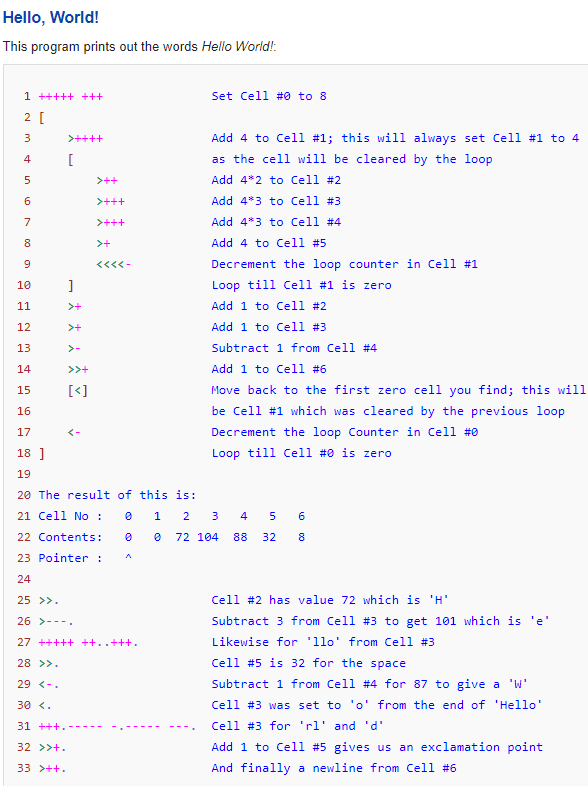
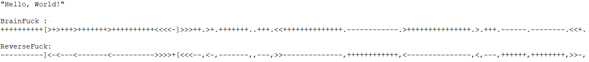

August 26, 2020
What is a programming language ? The basic definition of a programming language states that it is a set of instructions used in computer programming to execute algorithms. Hundreds of new languages are being added every year to a sea of myriad different programming languages. Many languages are written with a focus on describing “how a program operates”, these are the imperative programming languages. Whereas, languages that are written by describing “what the program must accomplish” and not “how it must accomplish it as a sequence” are the declarative programming languages.
A few days back I was going through my LinkedIn feed when I stumbled upon an article on Morse Code. The article covered the basics of Morse code and how it is used in telecommunication to encode text characters into a standard sequence of two characters, “.” And “-“ . This made me wonder if there was a programming language similar to Morse Code which also had only a few characters in its dictionary and could result in reducing the compilation time and hence increase the processing speed. That’s when I got to know about Esoteric Programming Languages. Esoteric Programming languages or the so called Esolangs, are typically programming languages designed to test the boundaries of computer programming languages. Esoteric as the word suggests is only intended to be understood by a small number of people. These programming languages differ from the traditional programming languages (Java, C++, Python) used by developer to write software. They are usually designed as a proof of concept, as an artwork, as a hacking interface to another language, or as a joke. Yes, as a joke because even if the compilation time taken by executing a program might be less in comparison to the traditional programming languages, any mildly complex task requires a long sequence of commands (even printing “Hello, World!”) and can take minutes. Many people classify the esolangs as being useless but, that is not the case. They can be used to write programs like normal programming languages, but since the code is too complex, people tend to avoid them. In general, usability is rarely the goal of the esolang developers.

Source: Wikipedia
After researching more on esolangs, the most interesting language I came across was BrainFuck and its antipode ReverseFuck. BrainFuck was created in 1993 by Urban Müller after getting inspired from the popular FALSE Programming language which consisted of only a 1024-byte compiler. The original BrainFuck compiler had a binary size of 296 bytes. The subsequent version used only 240 bytes. BrainFuck consists of eight commands: <, >, +, -, [, ], and ,. Even though there are only eight characters in the BrainFuck lexicon, it is one of the most complex and perplexing languages due to massive amount of code needed for its execution, even for a very simple program. ReverseFuck is a derivative of BrainFuck and was created by Juraj Borza in 2006 as a modification to BrainFuck. Even though it’s just a negation “!” of BrainFuck, yet it is more difficult to decipher due its anomalous nature. Here the “+” is used for decrementing the cell and “-“ for incrementing. Similarly, “>” decrements the pointer and “<” increments it.
